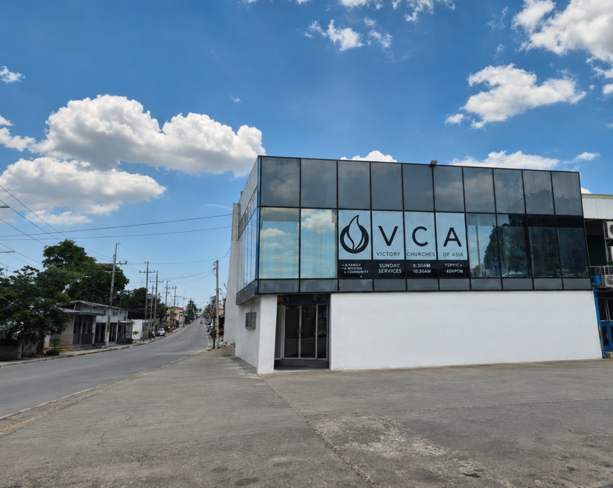
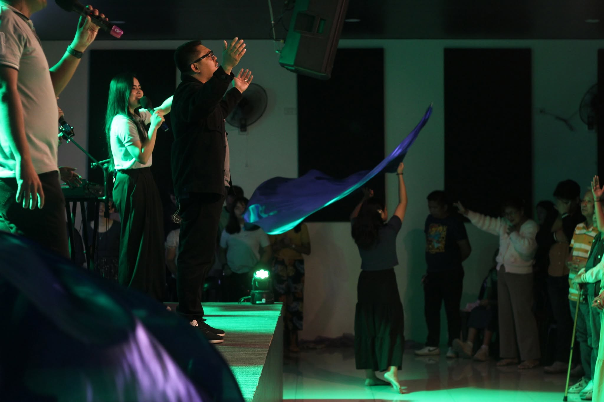
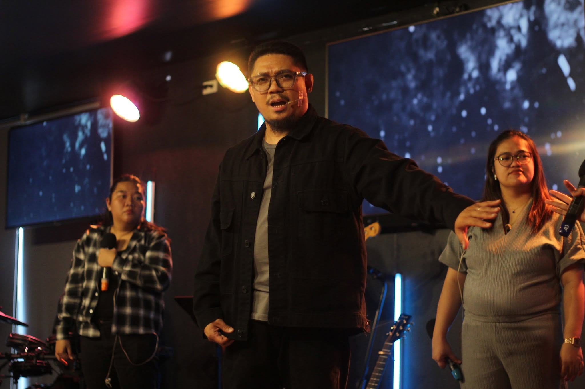
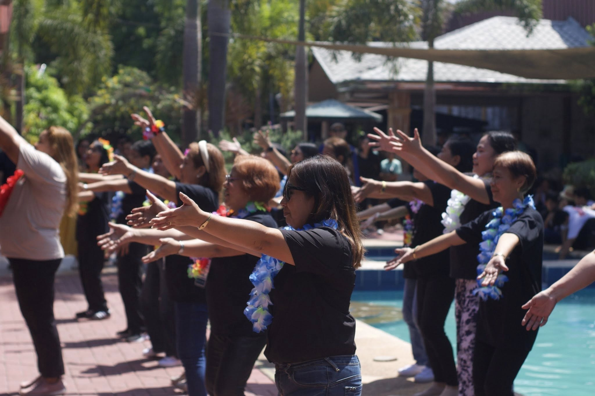

WHAT'S HAPPENING AT VCA
Stay updated with our latest events, services, and announcements.
About VCA Muzon
A FAMILY, A MISSION,
A PURPOSE.
Victory Churches of Asia exists for the glory of God and the expansion of His Kingdom through reaching, teaching, and mobilizing people to become like Christ.
At Victory Churches of Asia - Muzon, we are a community of believers committed to loving God, growing in His Word, and reaching others with the Gospel. Whether you are exploring faith for the first time or looking for a church family, you are welcome here.
You belong here.
Learn More →
SERVICE SCHEDULE
Sunday Service
Morning
8:30AM 10:30AM LIVE STREAMINGAfternoon
4:30PMYouth
Sunday
Midweek Service
Thursday
6:00PM

NEW HERE?
We can’t wait to meet you!